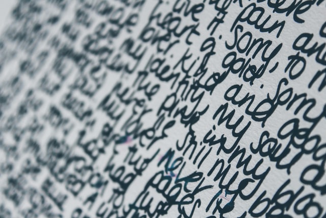
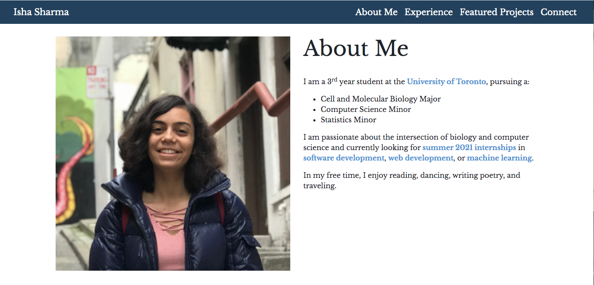

Projects


Conferencing System
- Designed an application using object-oriented programming practices to allow users to sign up for and attend various conferences.
- Created a graphical user interface (GUI) that supports user functions, such as creating accounts and a messaging system for attendees of a conference.



Handwriting Recognition
- Version 1: Implemented a KNN algorithm in C, using the MNIST dataset.
- Version 2: Built decision trees and binary files to develop a faster implementation of the first KNN version.
- Version 3: Used processes and pipes for another implementation of the KNN algorithm.
C (code viewable upon request)


BudgetLocal
- Designed mock-ups for a web application that allows users to budget their monthly expenses, with a focus on incentives that support small businesses in local communities.
- Implemented a chatbot with iMessage to integrate with the web application.
- Presented a formal business plan for the web app.
- Finalist in Hack the Globe 2021.
Figma

The Collective Action
- Designed mock-ups for a website for a non-profit organization that brings together high school and university students to work on solving societal problems.
Figma